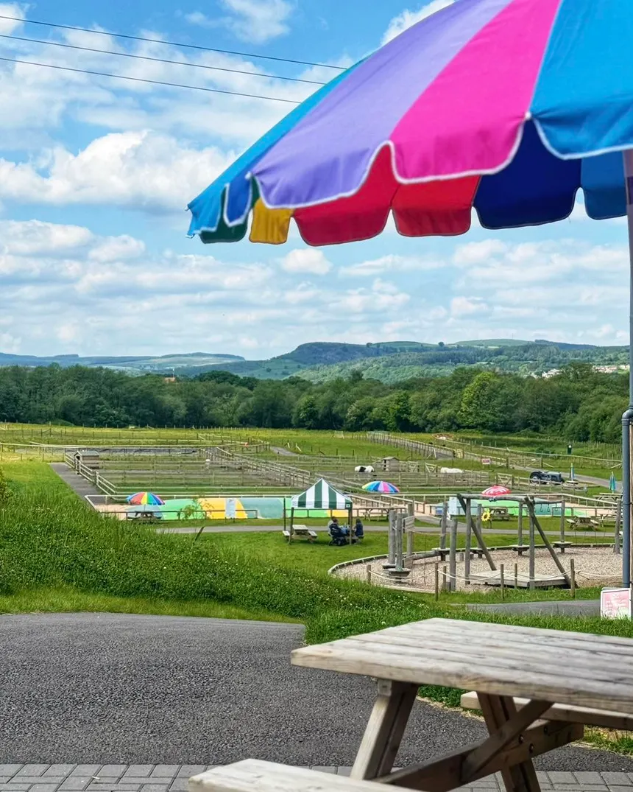

PLAYZONE & PARK
The Play Zone and Park at Edinburgh and Carlisle Farm & Petting Zoo is a vibrant, family‑friendly area designed to bring joy, energy, and adventure to visitors of all ages. Set within the natural beauty of the surrounding countryside, the play zone offers a wide selection of engaging activities, from climbing structures and slides to sensory play features that spark imagination and creativity. Children can enjoy interactive learning panels, balance beams, mini‑mazes, and farm‑themed play equipment that encourages exploration and active movement. The park includes spacious grassy areas ideal for picnics, outdoor games, and quiet relaxation, along with comfortable seating areas where families can unwind and enjoy the peaceful environment. Thoughtful landscaping, walking paths, and shaded rest spots make the park appealing throughout the year, providing a safe and welcoming space where families can take a break between animal encounters, enjoy the fresh air, and create lasting memories. Whether for playful fun, gentle relaxation, or a moment to recharge during a busy day at the farm, the Play Zone and Park serve as a cheerful highlight of the overall visitor experience.